On the surface, the four families that operate TVS & Sons have equal influence. Each held a 25% stake in the company and three seats on the 12-member board.
12 board seats3 per family
TVS — A Family on Wheels
How a Madurai bus service grew into the TVS group. [Standfirst placeholder]
Market share · Two-wheelers
TVS has slowly gained market share between FY23 and the first quarter of FY27
Market share, %
A novel solution to a common problem
Horse-drawn and bullock carts were still common on the mostly unpaved roads of India, and nails loosened and fell out of the animals’ hooves.
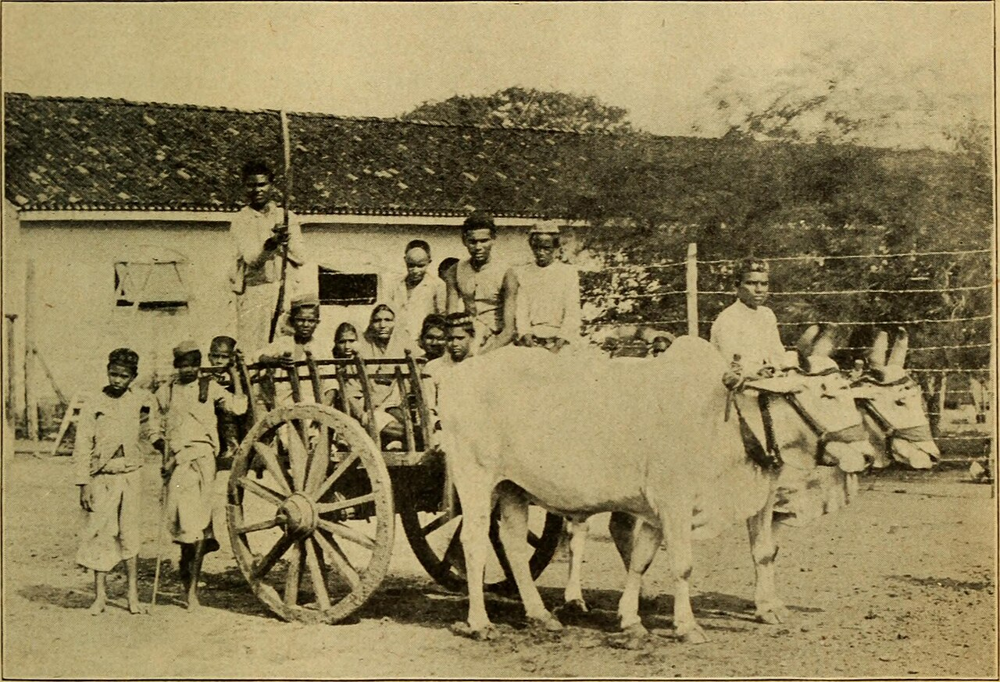
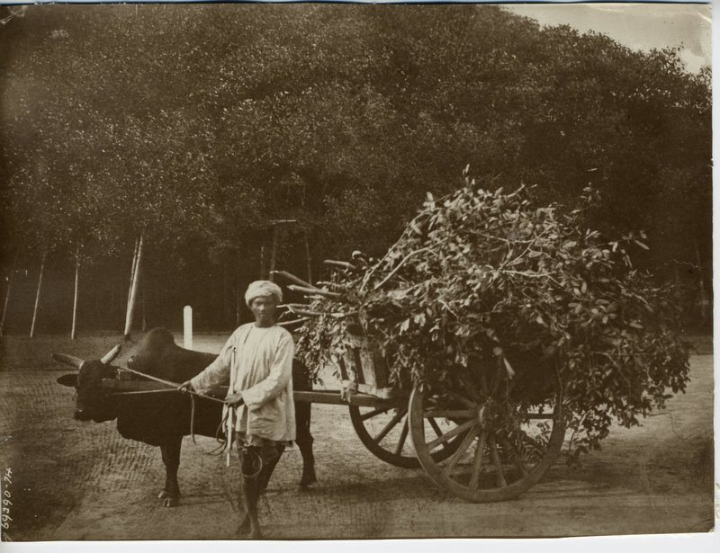
These nails, left on the road, punctured tyres and regularly caused automobile breakdowns.
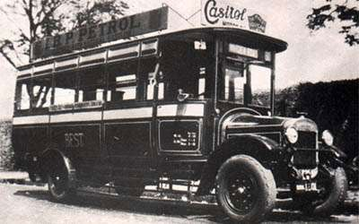
At the time, TV Sundaram was running a bus service between Madurai, Thanjavur, and Pudukkottai.
He had invested Rs 50,000, basically all his savings and profits from a previous venture, into this business. Busted buses could ruin him.
To solve his nail problem, Sundaram paid boys to walk his routes and collect nails and glass bottles.
But the carts kept coming, and the nails kept falling.
Years later, he fitted magnets under the buses to pick up stray nails.
Route drawn approximately along period roads; carts, bus, and figures are illustrative.
… ran according to schedule…
… charged by distance…
… issued printed tickets…
… and were repaired overnight.
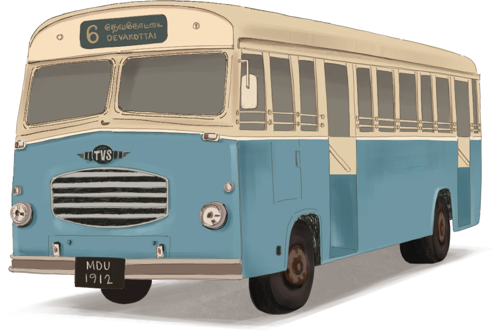
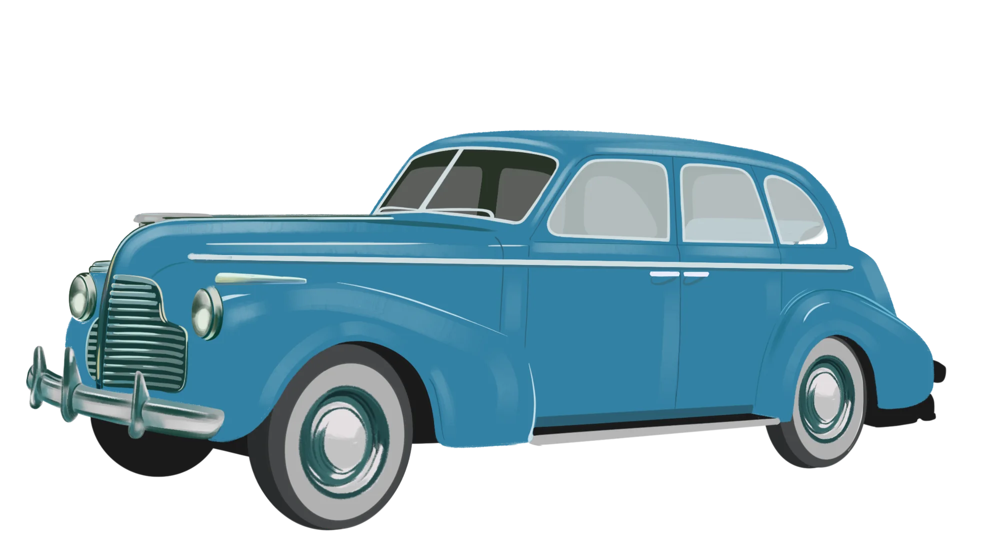
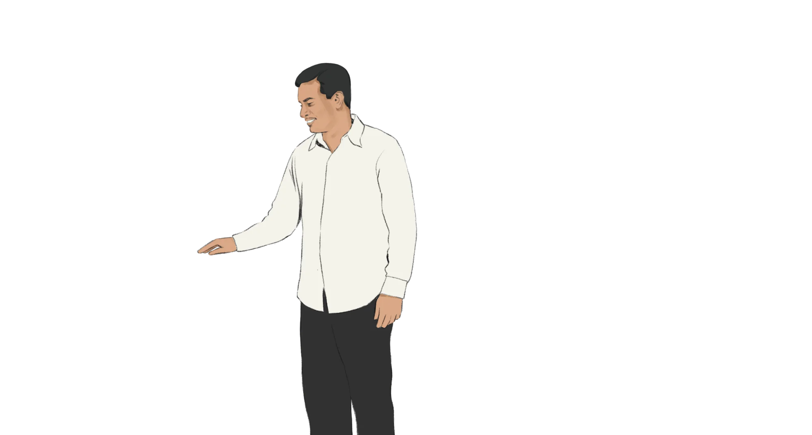
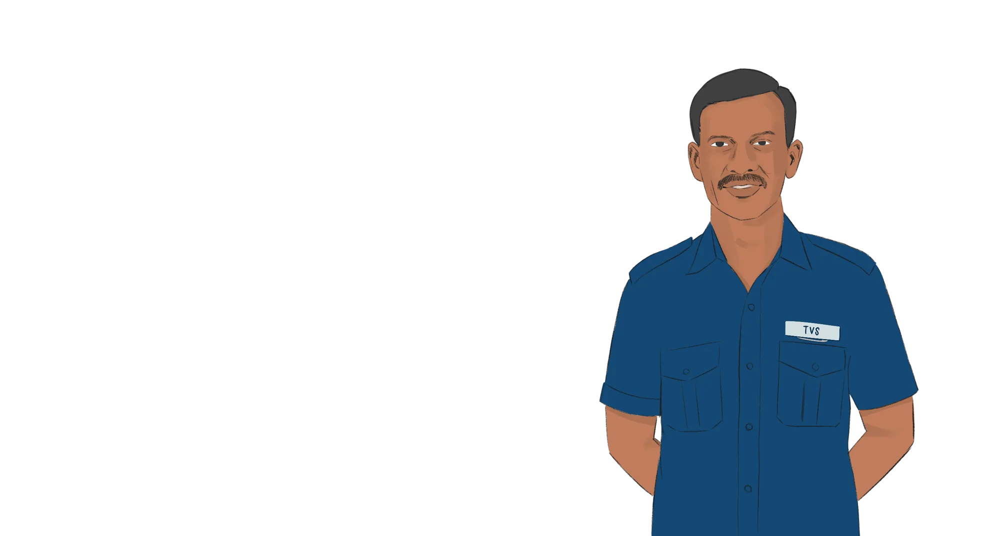
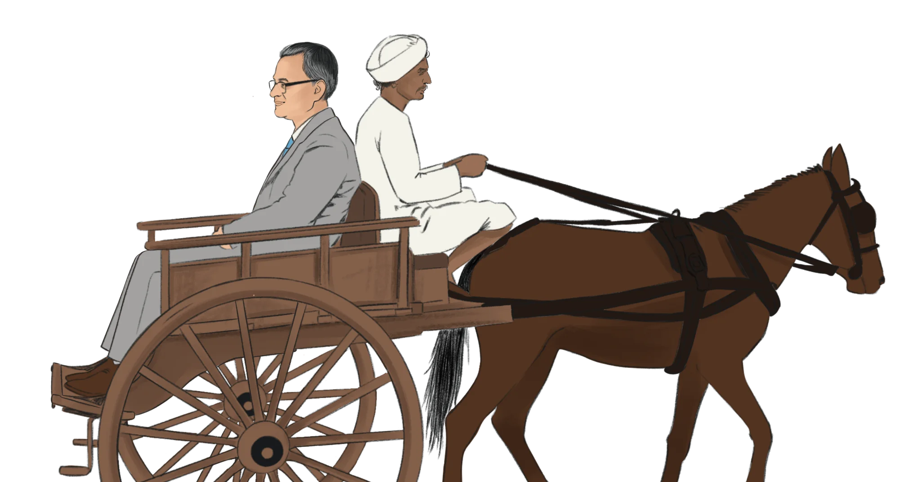
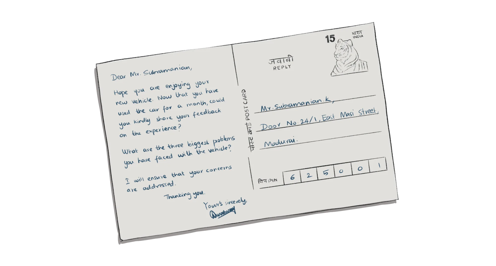
Doraiswamy wanted his customers to experience vehicles firsthand.
He would take a brand-new car to them, chat, then leave the vehicle so that they could try it out for a week.
He would then head home in whatever mode of transport the customer had been using until then. This was often a horse carriage or bullock cart.
The customer would usually fall in love with the car. Doraiswamy would then call them and seal the deal.
By the time the customer had spent a month with their new car, TVS would send them a prepaid postcard and ask for the three biggest problems that they had faced.
If the car had not been brought in for servicing, TVS would dispatch a “service salesman” to collect the vehicle, get it serviced, and return it to the customer.
During the Second World War, many dealers hoarded spare parts and inflated prices, but TVS sold them without those hikes. This gave the letters of TVS a new meaning in the public mind: “Trust, Value, and Service”.
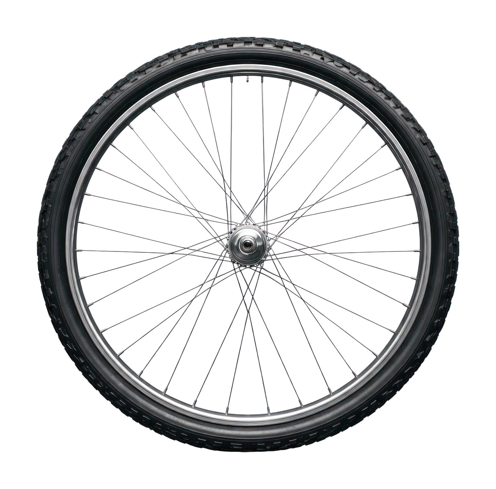
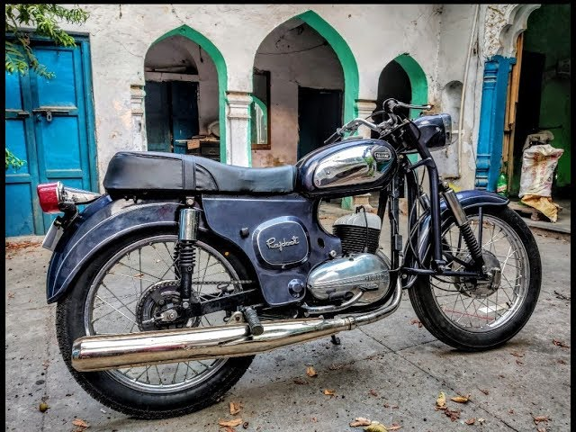
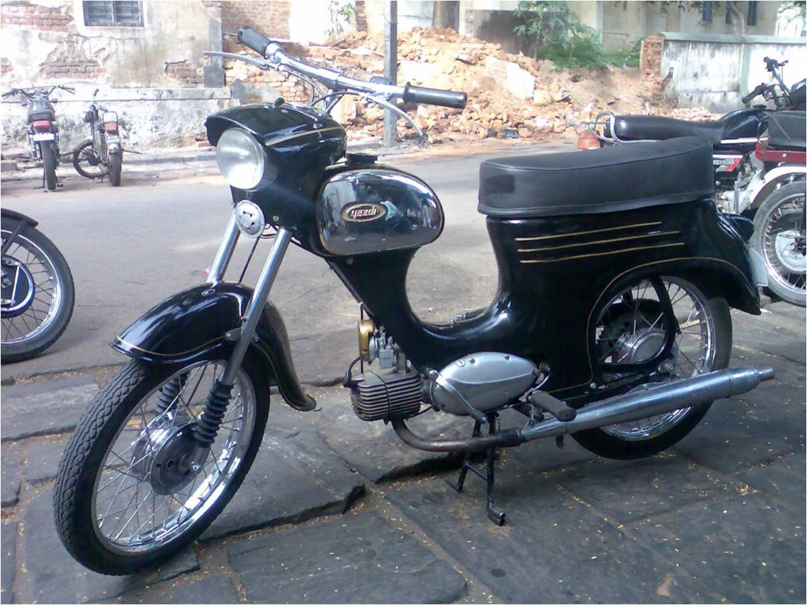
On India’s roads, Rajdoot, Jawa, Yezdi, and Enfield were all popular.
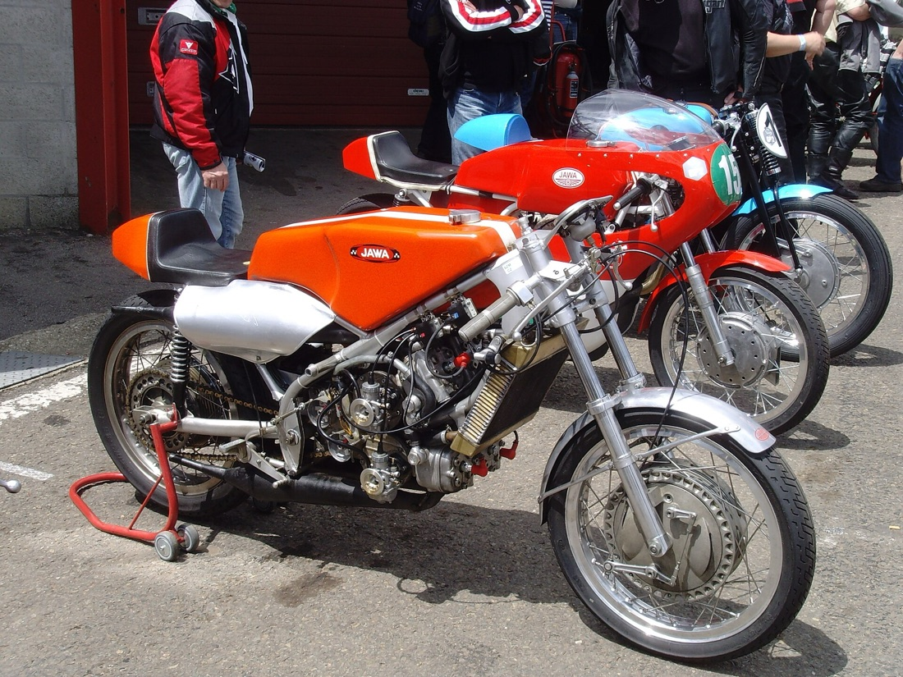
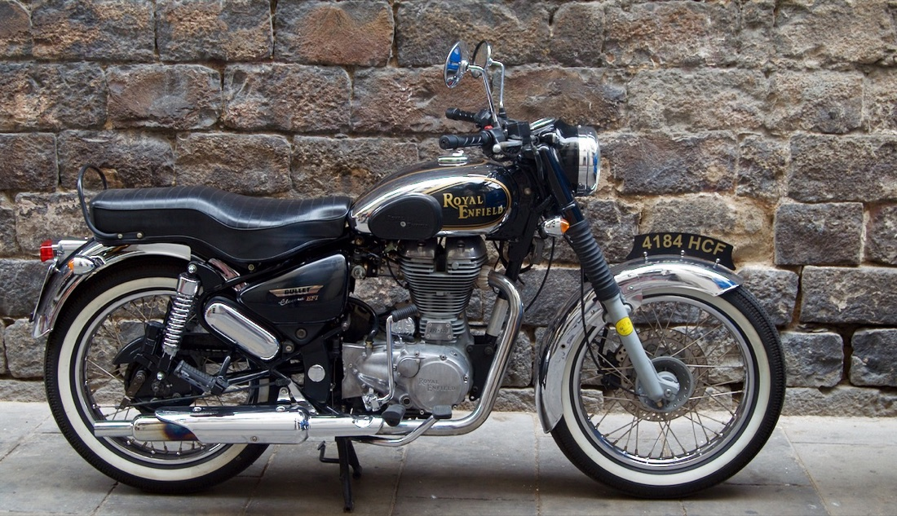
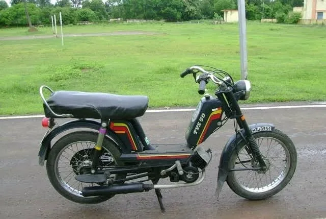
What Srinivasan had in mind was a two-wheeler that could carry two parents and a child, and was capable of hauling heavy loads.
It required a complete change in the design mindset behind a moped.
Engineers told him that it was impossible. But Srinivasan was determined to make it work.
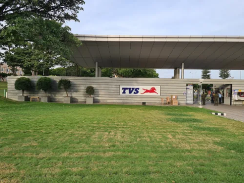
The factory walls went up one day in 1979, the same day Srinivasan died.
He didn’t get to see his vision become reality.
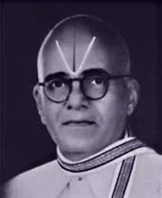
Photo: [source to be added]
Photo: Alx1xla, sourced via Wikimedia Commons (CC BY-SA 4.0)
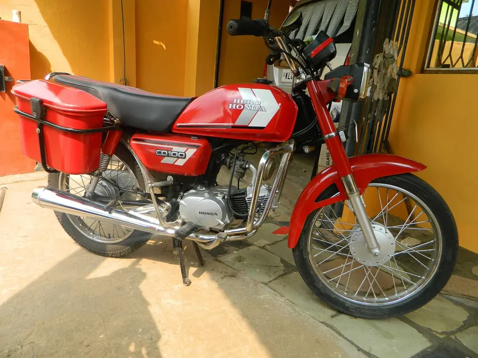
Photo: Abhiedava, sourced via Wikimedia Commons (CC BY-SA 4.0)
Srinivasan’s son Venu became managing director of Sundaram Clayton.
The TVS 50 launched in 1980 and became a staple of rural India, even a wedding gift.
In 1982, TVS partnered with Suzuki on motorcycles, and the AX100 delivered 45 km/L.
But Hero Honda’s four-stroke CD 100 arrived three years later with 70–80 km/L and upended the market.
On the surface, the four families that operate TVS & Sons have equal influence. Each held a 25% stake in the company and three seats on the 12-member board.
But the chairman and managing director positions always went to the Santhanam and Rajam families.
The Krishna and Srinivasan families formed an alliance against them.
TS Rajam died. His grandson Ramachandran Haresh became executive director.
TS Krishna’s eldest son, Suresh Krishna, sued to challenge the appointment.
He eventually withdrew the case.
Eventually, TVS & Sons reorganised its structure so no decision could be made without the board’s unanimous agreement.
In 1992, Venu and his cousin Suresh Krishna went to court against a company owned by the Santhanam family, over plans to compete with a Krishna-owned family business in brake linings.
My uncle [Santhanam], the eldest member of the family, instead of protecting the interests of the TVS Group, is protecting the interests of his son and his son-in-law.Venu Srinivasan
Ongoing discord within TVS & Sons kept the group from pursuing opportunities in IT and telecommunications.
None of the group companies had enough resources on their own to make big moves.
When they came together, they couldn’t reach agreements.
The table that was built to share power ended up pulling it apart. The next generation inherited the pieces.
Seventy-five TVS employees flew to Suzuki’s headquarters in Japan to learn — then brought what they learned home to Tamil Nadu.
Scroll to follow the journey
Chennai, Tamil Nadu
In 1992, TVS employees were set to train at Suzuki in Hamamatsu, Japan. For many of them it would be the first journey beyond their home state.
The travellers
Seventy-five employees in all, travelling to Japan in three separate groups.
Outbound
Each batch made the trip from Chennai to Hamamatsu, on the Pacific coast of Shizuoka Prefecture.
Routes are drawn as straight great-circle lines between the two cities. The actual flights and stopovers aren’t shown.
Hamamatsu, Shizuoka · Suzuki HQ
Each batch trained at Suzuki’s headquarters for three to four months, far from home and in a new working culture.
Homebound
When their training ended, each batch flew home, carrying what they had seen on Suzuki’s shop floors.
Back at TVS
The returning employees shared their knowledge of Japanese practices with colleagues who had never made the trip, so the training reached far beyond the 75 who went.
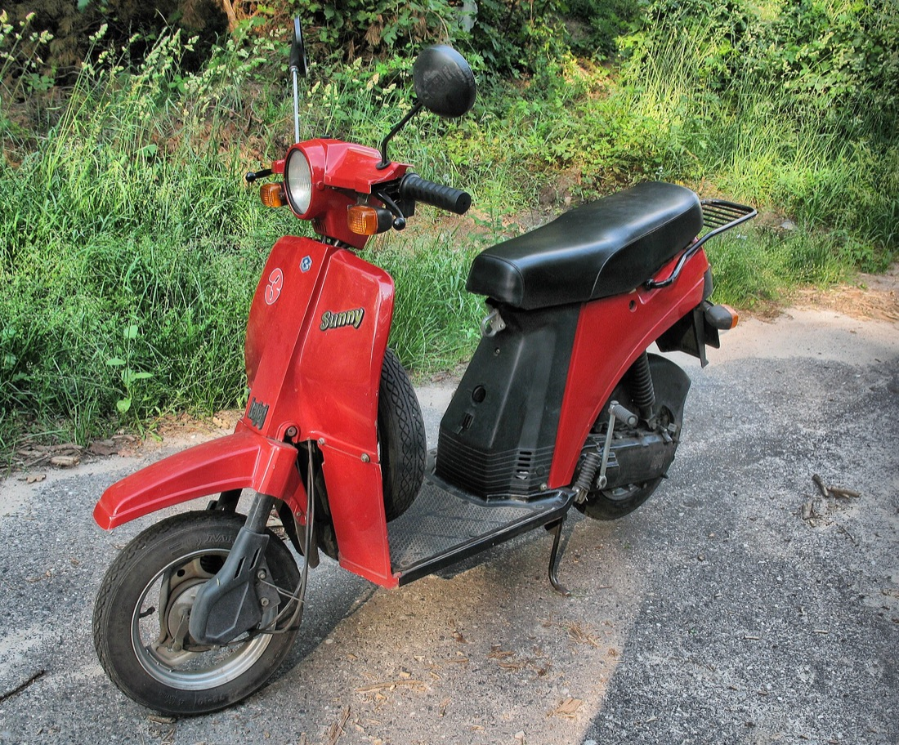
A lightweight 50cc scooter that started eating into TVS moped sales, prompting the Scooty project as a response
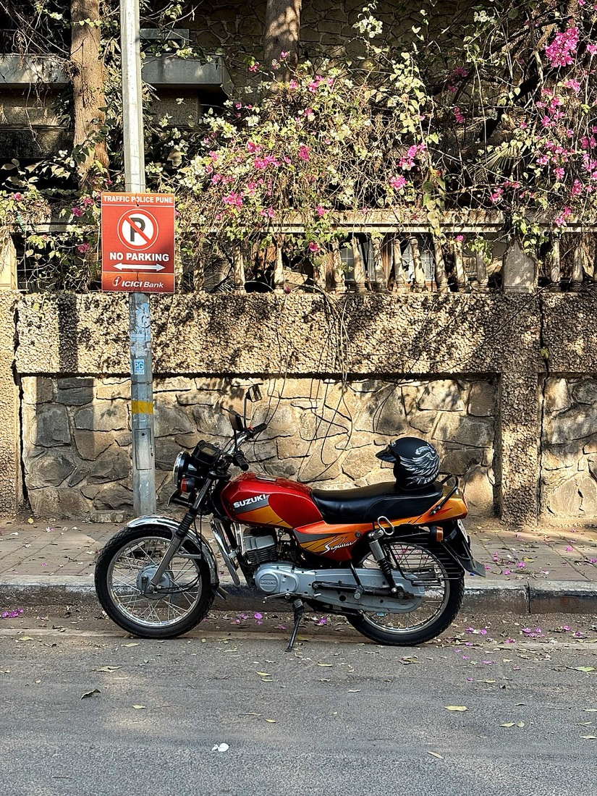
A lightweight, two-stroke, urban version pitched as the “no-problem bike”. TVS kept the Suzuki branding after deciding that selling more vehicles mattered more than keeping their own name on the motorcycle
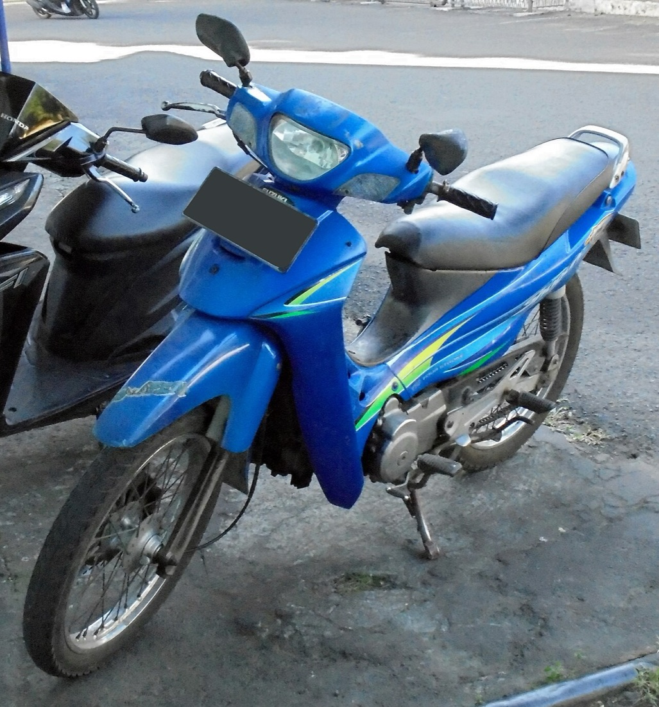
This 110cc bike beat Yamaha on pickup and power
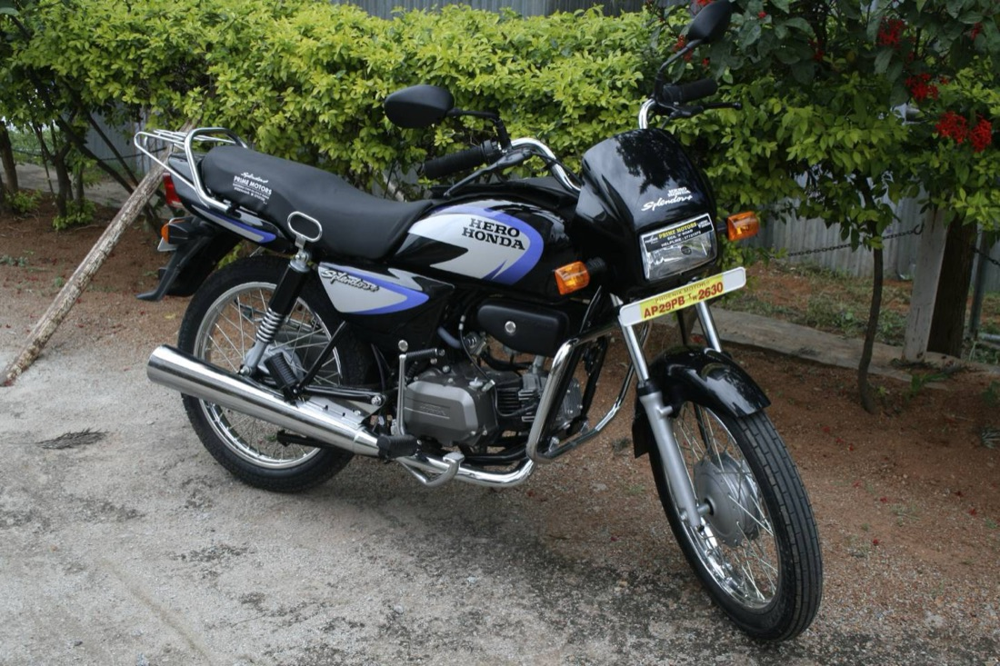
An entry-level bike that became India’s largest-selling motorcycle of all time. It was still the top seller in 2025
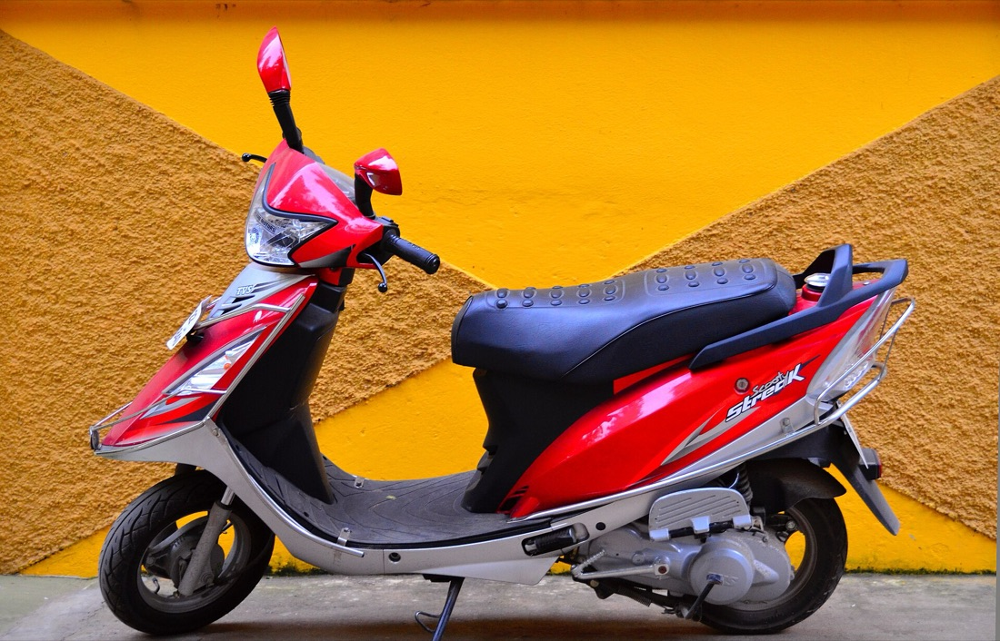
A 60cc scooter that was a hit with women, with 99 colour options and a low design cost of Rs 3 crore
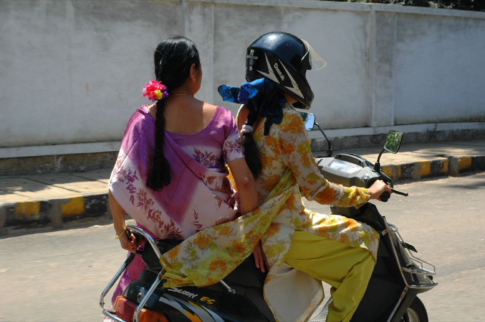
This version reached 10,000 units sold per month, and “Scooty” became the common name for the whole segment
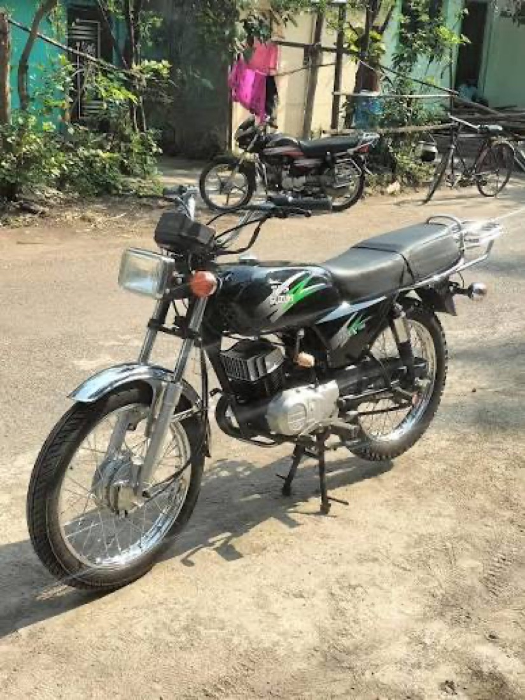
A rugged, low-cost workhorse. Its lightweight design, strong low-end torque, and simple two-stroke mechanics fit rural and agricultural environments
TVS Suzuki · The engine question
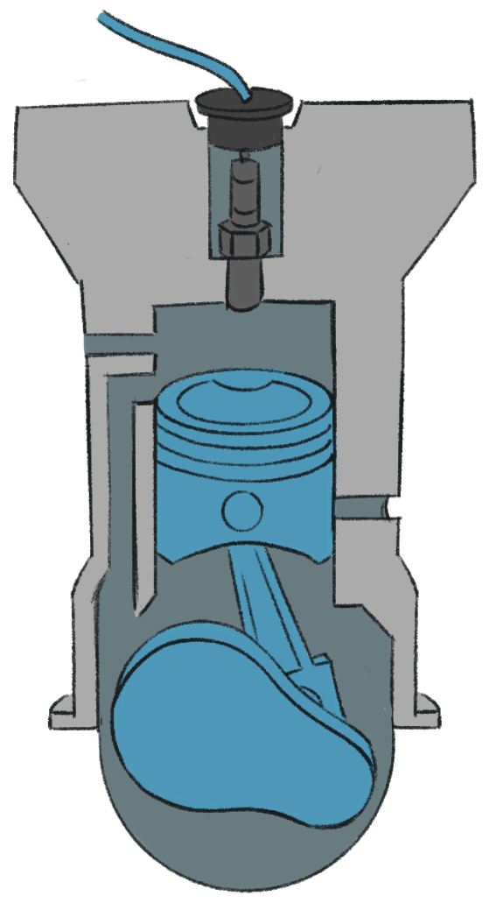
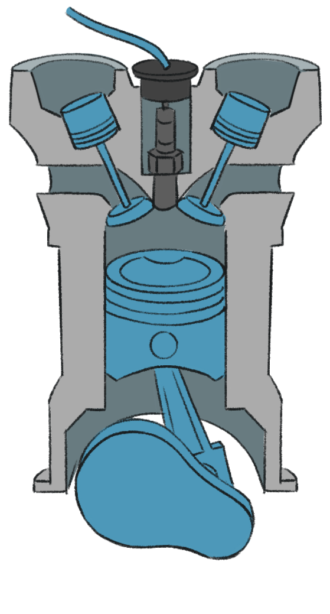
Market share, %
Source: [placeholder]
Suzuki believed two-stroke motorcycles fit the market.
TVS’s Japanese partner wanted to optimise for ruggedness, rough use, and pulling ability rather than mileage.
Honda opted for a four-stroke engine, which burned fuel more completely and hence could go further on a litre of fuel.
TVS Suzuki lost out on the demand for four-stroke motorcycles.
Meanwhile, Hero Honda’s market share went from 28% in 1996 to 42% in 2000…
…when TVS Suzuki’s share was stuck at 15–19%.
In September 2001, the TVS group and Suzuki Motor Corporation ended their 15-year-old joint venture
Profit after tax, Rs crore
TVS Jupiter · Zyada ka fayda
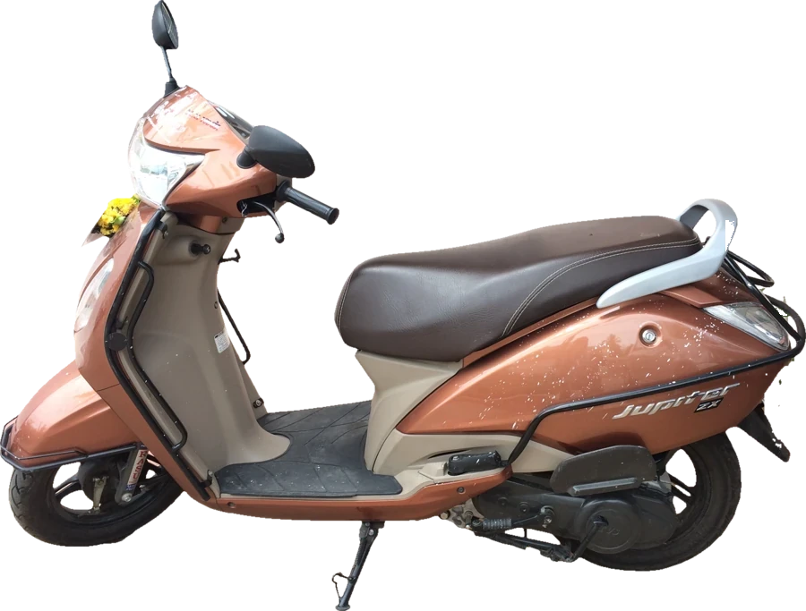
1million+
Jupiters sold in 2.5 years
Two-wheeler makers2014
2013
The Jupiter scooter launched in 2013, positioned with “zyada ka fayda”, or “extra benefits” from its new features.
01 / 04
An external fuel filler at the back made it possible to refuel without getting up from the seat.
02 / 04
A low-fuel warning light told drivers when they had to stop, at a time when few scooters had this.
03 / 04
The patented Econometer showed when the scooter was at high fuel efficiency.
04 / 04
A mobile phone charging point was added under the seat.
TVS sold more than 1 million units of the Jupiter in 2.5 years and took third place in two-wheelers from Bajaj in 2014.
TVS continued to add new features for every customer segment.
2016 · TVS XL 100
The XL 100 had a detachable seat for hauling cargo.
2018 · TVS NTorq
The NTorq was India’s first Bluetooth-connected scooter.
2021 · TVS Raider
The Raider had under-seat storage, making it useful for commuters.
2021 · TVS Jupiter
The Jupiter had storage space for two full-face helmets, because its fuel tank was under the floorboard.
Export volume in millions
TVS’s plant in Hosur, where the first TVS 50 was built. The company’s office is in Chennai, on the coast to the east.
Ather Energy was founded in 2013 by IIT Madras alumni Tarun Mehta and Swapnil Jain. It was set up 30 minutes from TVS’s Chennai office.
Ola Electric followed in 2017 and raised $800 million over a few years. Its founder, Bhavish Aggarwal, announced the world’s largest two-wheeler factory, with a capacity of 10 million scooters per year, in the same district where the first TVS 50 was built.
Shaded: Krishnagiri district, home to both TVS’s Hosur plant and Ola’s factory at Pochampalli. Locations are approximate.
FY22
Hero Electric is the segment leader, followed by Okinawa.
FY24
In just two years, Ola Electric comes to control more than one-third of the market. TVS Motor also gains significant share.
CY26
Ola Electric loses its advantage and TVS Motor is the market leader.
From a single bus route to the world’s third-largest two-wheeler maker.